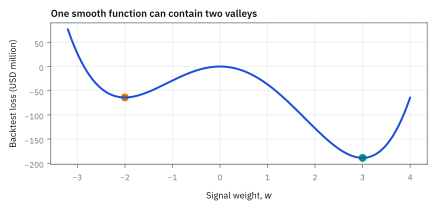
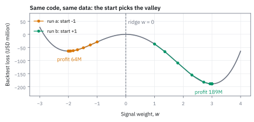
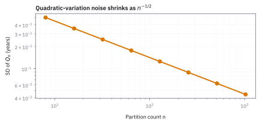
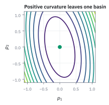

12.1 Global vs Local Minima
optimizer เห็นแค่พื้นรอบเท้า จึงรับประกันได้แค่หลุมที่ใกล้ที่สุด ยกเว้นโจทย์ที่เป็นชามใบเดียวแบบ convex
ทีม quant ปรับน้ำหนักสัญญาณ $w$ ของกลยุทธ์หนึ่งด้วย gradient descent บนผลขาดทุนย้อนหลังสมมติ $f(w)=3w^4-4w^3-36w^2$ หน่วยล้าน USD (ค่าติดลบคือกำไร) รันโค้ดเดิมกับข้อมูลเดิมสองรอบ รอบแรกเริ่มที่ $w=-1$ รอบสองเริ่มที่ $w=+1$ ทั้งสองรอบรายงานว่า “converged, slope = 0” เพื่อนร่วมทีมบอกว่าเลือกรอบไหนก็ได้ เพราะ optimizer ยืนยันแล้วทั้งคู่ จริงไหม?
ลองตอบก่อนเปิดเฉลย
ไม่จริง รอบแรกหยุดที่ $w=-2$ กำไร \$64 ล้าน รอบสองหยุดที่ $w=3$ กำไร \$189 ล้าน ต่างกัน \$125 ล้านจากจุดเริ่มอย่างเดียว ทั้งสองจุดมีความชันศูนย์และโค้งหงาย คือผ่านทุกการตรวจที่ทำได้รอบตัว แต่มีแค่ $w=3$ ที่ต่ำสุดทั้งเส้น ส่วนโจทย์ลด variance ของพอร์ตหุ้นกับพันธบัตรที่ลงเงินครบ 100% ในหน้านี้ เริ่มที่หุ้น 0% หรือ 100% ก็จบที่หุ้น 10.53% เหมือนกัน เพราะมันเป็นชามใบเดียว
สิ่งที่เราจะสร้าง
บทที่ 11 แก้โจทย์ที่ทุกอย่างเป็นเส้นตรง บทนี้เปิดทางให้ objective โค้งได้ เช่น variance ของพอร์ตใน 8.8 ซึ่งเป็นกำลังสองของน้ำหนัก ราคาที่ต้องจ่ายคือคำถามใหม่ข้อหนึ่ง: จุดที่ algorithm หยุดคือคำตอบของโจทย์จริงหรือแค่หลุมที่ใกล้ที่สุด
เราจะเริ่มจากพื้นผิว backtest ที่มีสองหุบ หาจุดราบด้วยมือ ปล่อย gradient descent จากสองจุดเริ่ม แล้วนิยามคำว่า global กับ local ให้เป๊ะ จากนั้นพิสูจน์ว่าเงื่อนไข convex ทำให้ปัญหานี้หายไป ตรวจว่า variance ของพอร์ตผ่านเงื่อนไขนี้กับทุกคู่ และจบด้วยการใช้นิยามเดียวกันจับได้ว่าพื้นผิว backtest ไม่ผ่าน
ศัพท์ที่ใช้ในหัวข้อนี้
- Global minimum
- จุดที่ objective ต่ำที่สุดเมื่อเทียบกับทุกจุดที่โจทย์อนุญาต คือคำตอบที่เราต้องการจริง
- Local minimum
- จุดที่ไม่มีจุดใกล้ ๆ ตัวไหนต่ำกว่า เป็นสิ่งที่ algorithm ซึ่งมองแค่รอบตัวรับประกันได้ อาจไม่ใช่ global
- Stationary point
- จุดที่ความชันเป็นศูนย์ ใช้เป็นรายชื่อผู้สมัคร เพราะจุดต่ำสุดภายในที่เรียบต้องอยู่ในรายชื่อนี้ แต่ยอดเนินก็อยู่ด้วย
- Convex function
- function ที่เส้นตรงเชื่อมสองจุดใด ๆ บนกราฟไม่เคยต่ำกว่ากราฟ ใช้รับประกันว่าหลุมใกล้ตัวคือหลุมต่ำสุดของทั้งโจทย์
- Basin of attraction
- ชุดจุดเริ่มที่ algorithm ไหลลงไปจบที่หลุมเดียวกัน ขึ้นกับทั้งภูมิประเทศและขนาดก้าวที่ใช้
- Multi-start
- การรัน optimizer ซ้ำจากหลายจุดเริ่มแล้วเก็บผลที่ดีที่สุด ใช้กับโจทย์ที่มีหลายหุบ ช่วยลดโอกาสพลาด แต่ไม่ใช่การพิสูจน์
สัญลักษณ์และหน่วย
| สัญลักษณ์ | ความหมาย | หน่วย |
|---|---|---|
| $w$ | น้ำหนักสัญญาณของกลยุทธ์ ติดลบได้ แปลว่าเล่นสวนสัญญาณ | ไม่มีหน่วย |
| $f(w),\ f'(w),\ f''(w)$ | ผลขาดทุนย้อนหลัง ความชัน และความโค้ง | ล้าน USD, ล้าน USD ต่อหน่วย $w$, ต่อหน่วย $w^2$ |
| $\eta$ | ขนาดก้าวของ gradient descent | หน่วย $w$ ต่อหน่วยความชัน |
| $a_k,\ b_k$ | ตำแหน่งหลังก้าวที่ $k$ ของรอบที่เริ่ม −1 และรอบที่เริ่ม +1 | ไม่มีหน่วย |
| $x^\star,\ y,\ r$ | จุดที่กำลังตรวจ จุดเทียบ และรัศมีของละแวก | หน่วยเดียวกับตัวแปร |
| $\alpha$ | สัดส่วนผสมบนเส้นตรงระหว่างสองจุด อยู่ระหว่าง 0 ถึง 1 | ไม่มีหน่วย |
| $V,\ p$ | covariance ของผลตอบแทนรายปีของหุ้นกับพันธบัตร และน้ำหนักพอร์ต | return² ต่อปี และสัดส่วนของ NAV |
| $a,\ g(a)$ | น้ำหนักหุ้นเมื่อลงเงินครบ 100% และ variance ของพอร์ตนั้น | สัดส่วนของ NAV และ return² |
ขั้นที่ 1 — หาจุดที่พื้นราบของ backtest
ก่อนจะถามว่าจุดไหนต่ำสุด ต้องมีรายชื่อผู้สมัครก่อน ถ้าความชันที่จุดหนึ่งไม่เป็นศูนย์ ก้าวสวนความชันนิดเดียวก็ได้ค่าต่ำลง จุดต่ำสุดที่อยู่กลางพื้นผิวเรียบจึงต้องมีความชันศูนย์ เราหา derivative แล้วแยกตัวประกอบ
ทุกพจน์ของ $f'$ มี $w$ อย่างน้อยหนึ่งตัว จึงดึง $12w$ ออกมาได้ วงเล็บที่เหลือต้องการสองจำนวนที่คูณกันได้ −6 และบวกกันได้ −1 คือ −3 กับ +2 ผลคูณเป็นศูนย์เมื่อตัวใดตัวหนึ่งเป็นศูนย์ จึงได้ผู้สมัครสามตัวโดยไม่ต้องแก้สมการกำลังสามตรง ๆ
ตัวเลข 3, −4, −36 ถูกเลือกให้รากลงตัวจนคิดมือได้ พื้นผิวของกลยุทธ์จริงไม่มีสูตร มันคือผลของ backtest ทีละค่า แต่มีหลายหุบแบบเดียวกัน
ขั้นที่ 2 — จัดประเภทสามจุด และพิสูจน์ว่าเทียบแค่สามจุดก็พอ
ความชันศูนย์เกิดได้ทั้งที่ก้นหุบและบนยอดเนิน ตัวแยกคือความโค้ง $f''$ ถ้าบวกกราฟหงายขึ้นเป็นก้นหุบ ถ้าลบกราฟคว่ำเป็นยอดเนิน (12.3 จะพิสูจน์กฎนี้) จากนั้นแทนค่ากลับเข้า $f$ เพื่อวัดความลึก
$w=-2$ กับ $w=3$ เป็นก้นหุบทั้งคู่ ส่วน $w=0$ เป็นยอดเนินที่คั่นกลาง สองก้นหุบผ่านเงื่อนไขความชันและความโค้งเหมือนกันทุกประการ แต่ลึก −64 กับ −189 ต่างกัน 125 นี่คือเหตุที่การตรวจรอบตัวแยกสองหุบไม่ออก
แต่จะรู้ได้อย่างไรว่าไม่มีจุดที่ต่ำกว่า −189 ซ่อนอยู่ไกลออกไป? ดึง $w^2$ ออกเป็นตัวร่วมแล้วดูเครื่องหมายของวงเล็บที่เหลือ
วงเล็บมีความชัน $6w-4$ ซึ่งบวกเมื่อ $w\ge5$ และลบเมื่อ $w\le-5$ วงเล็บจึงโตขึ้นเรื่อย ๆ เมื่อเดินออกไปทั้งสองฝั่ง นอกช่วง $-5\le w\le5$ ทุกค่าของ $f$ จึงเป็นบวก สู้ −189 ไม่ได้ ในช่วงนั้นจุดต่ำสุดต้องเป็นจุดราบหรือปลายช่วง และปลายช่วงให้ $f(5)=475$ กับ $f(-5)=1{,}475$ คำตอบ global จึงเป็น $w=3$ แน่นอน
นี่คือใบรับรอง global แบบหนึ่ง: หาจุดราบให้ครบ แล้วแสดงว่าพื้นผิวเชิดขึ้นเมื่อออกไปไกล ใช้ได้ที่นี่เพราะมีตัวแปรเดียวและมีสูตร โจทย์ 20 parameter ทำแบบนี้ไม่ได้
Figure 12.1a — หนึ่งเส้นเรียบ สองหุบ

ขั้นที่ 3 — นิยามคำว่าต่ำสุดสองระดับ
ตอนนี้เรามีตัวอย่างครบทั้งสองแบบแล้ว จึงเขียนนิยามให้เป๊ะได้ สองบรรทัดนี้เป็นนิยาม ต่างกันแค่ว่าเทียบกับจุดไหนบ้าง
global เทียบกับทุกจุดที่โจทย์อนุญาต local เทียบเฉพาะจุดที่ห่างจาก $x^\star$ ไม่เกินรัศมี $r$ ซึ่งเป็นบวกค่าหนึ่ง เล็กแค่ไหนก็ได้ ภาษาชาวบ้านคือ local แปลว่าคลำรอบเท้าแล้วไม่มีอะไรต่ำกว่า global แปลว่าต่ำที่สุดในแผนที่ทั้งใบ
$w=-2$ เป็น local ด้วย $r=1$: ในช่วง −3 ถึง −1 จุดราบมีแค่ −2 และปลายช่วงให้ $f(-3)=27$ กับ $f(-1)=-29$ สูงกว่า −64 ทั้งคู่ ทุก global เป็น local ด้วย แต่กลับกันไม่จริง
ขั้นที่ 4 — ปล่อย gradient descent จากสองจุดเริ่ม
โจทย์ให้อะไรมาบ้าง: กฎของ gradient descent คือก้าวสวนความชัน $w_{k+1}=w_k-\eta f'(w_k)$ ใช้ $\eta=0.005$ เท่ากันทั้งสองรอบ เรียกรอบที่เริ่ม −1 ว่า $a$ และรอบที่เริ่ม +1 ว่า $b$ ใช้ $f'(w)=12w(w-3)(w+2)$ จากขั้นที่ 1
คำตอบ: ความชันบวกสั่งให้ถอยซ้าย ความชันลบสั่งให้เดินขวา ระหว่าง −2 กับ 0 ความชันเป็นบวกตลอด (ตัวประกอบ $12w$ ลบ, $w-3$ ลบ, $w+2$ บวก) รอบ $a$ จึงไหลซ้ายไปหา −2 ระหว่าง 0 กับ 3 ความชันเป็นลบตลอด รอบ $b$ จึงไหลขวาไปหา 3 สันเขาที่ $w=0$ คือเส้นแบ่ง ตารางข้างล่างคือแปดก้าวแรก
| ก้าว $k$ | รอบ $a$: $w$ | ความชัน | รอบ $b$: $w$ | ความชัน |
|---|---|---|---|---|
| 0 | −1.0000 | +48.00 | +1.0000 | −72.00 |
| 1 | −1.2400 | +47.95 | +1.3600 | −89.93 |
| 2 | −1.4797 | +41.38 | +1.8096 | −98.48 |
| 3 | −1.6867 | +29.72 | +2.3020 | −82.95 |
| 4 | −1.8353 | +17.54 | +2.7168 | −43.55 |
| 5 | −1.9230 | +8.75 | +2.9345 | −11.38 |
| 6 | −1.9667 | +3.90 | +2.9914 | −1.54 |
| 7 | −1.9862 | +1.64 | +2.9991 | −0.16 |
| 40 | −2.0000 | 0.00 | +3.0000 | 0.00 |
ตรวจเองใน 10 วินาที: $0.005\times48=0.24$ จึงได้ −1.24 และ $0.005\times72=0.36$ จึงได้ 1.36 ใกล้ก้นหุบความชันเหลือน้อย ก้าวจึงสั้นลงเองโดยไม่ต้องสั่ง รอบ $b$ ถึงก่อนเพราะหุบขวาชันกว่า (ความโค้ง 180 เทียบ 120)
Figure 12.1b — โค้ดเดียว ข้อมูลเดียว จุดเริ่มเลือกหุบ

ขั้นที่ 5 — convexity: เส้นเชื่อมต้องไม่ต่ำกว่ากราฟ
ปัญหาหลายหุบจะหายไปถ้าพื้นผิวผ่านเงื่อนไขหนึ่ง บรรทัดนี้เป็นนิยามของเงื่อนไขนั้น
เลือกสองจุดบนกราฟ ลากเส้นตรงเชื่อมกัน $\alpha$ บอกตำแหน่งบนเส้น: $\alpha=1$ อยู่ที่ $x$, $\alpha=0$ อยู่ที่ $y$ ฝั่งซ้ายคือค่าจริงของ function ฝั่งขวาคือค่าบนเส้นตรง function จะ convex ก็ต่อเมื่อกราฟไม่โผล่ขึ้นเหนือเส้นตรง ไม่ว่าเลือกคู่ไหน คำว่าทุกคู่คือจุดที่ทำให้พิสูจน์ยาก แต่หักล้างง่าย
ขั้นที่ 6 — พิสูจน์: ถ้า convex หลุมใกล้ตัวทุกหลุมคือหลุมต่ำสุด
สมมติว่า $x^\star$ เป็น local minimum แต่มีจุด $y$ ที่อนุญาตและต่ำกว่า เดินจาก $x^\star$ ไปหา $y$ ตามเส้นตรง แล้วใช้นิยามของขั้นที่ 5 ดูว่าค่าบนทางเดินเป็นอย่างไร
บรรทัดที่สามจัดรูปให้เห็นว่าค่าบนทางเดินคือค่าที่ $x^\star$ บวก $\alpha$ คูณผลต่าง ซึ่งผลต่างติดลบเพราะ $y$ ต่ำกว่า ค่าจึงลดลงทันทีที่ก้าวออกจาก $x^\star$ บรรทัดสุดท้ายบอกว่าเลือก $\alpha$ เล็กพอ จุดบนทางเดินก็อยู่ในรัศมี $r$ ได้
จุดนั้นอยู่ใกล้และต่ำกว่า $x^\star$ ขัดกับที่ว่า $x^\star$ ต่ำสุดรอบตัว สมมติฐานว่ามี $y$ ที่ต่ำกว่าจึงผิด เงื่อนไขที่ซ่อนอยู่คือทางเดินต้องอยู่ในเขตที่อนุญาตตลอด เขตแบบ “ลงเงินครบ 100%” ผ่าน แต่เขตแบบ “ถือไม่เกิน 30 ตัว” ไม่ผ่าน
ขั้นที่ 7 — ทดสอบกับพอร์ตหุ้นและพันธบัตร: 0.0155 อยู่ใต้ 0.0250
โจทย์ให้อะไรมาบ้าง: แบบจำลองรายปีสมมติที่ใช้ทั้งบทนี้ หุ้นมี SD 20% พันธบัตร SD 10% correlation 0.30 objective คือ variance ของพอร์ต $f(p)=p^{\mathsf T}Vp$ จาก 8.8 ทดสอบนิยามด้วยพอร์ตสุดขั้วสองพอร์ต คือหุ้นล้วน $x=(1, 0)$ กับพันธบัตรล้วน $y=(0, 1)$ ที่ $\alpha=0.5$
คำตอบ: ค่าจริงที่กึ่งกลาง 0.0155 อยู่ใต้เส้นตรง 0.0250 นิยามผ่านสำหรับคู่นี้ ในหน่วย SD พอร์ตครึ่งต่อครึ่งมี $\sqrt{0.0155}\approx12.45\%$ ขณะที่เส้นตรงให้ $\sqrt{0.025}\approx15.81\%$ ส่วนต่าง 0.0095 คือ variance ที่ลดได้จากการผสมสองสินทรัพย์ที่ไม่ขยับไปด้วยกันเต็มที่
ตรวจเองใน 10 วินาที: พจน์กลาง $0.012=2\times0.006$ เพราะช่อง $V_{12}$ กับ $V_{21}$ เท่ากันและถูกนับสองครั้ง ถ้าลืมคูณสองจะได้ 0.0140 แทน 0.0155
Figure 12.1c — variance อยู่ใต้เส้นตรงตลอดช่วง

ขั้นที่ 8 — ช่องว่างมีสูตรปิด และไม่ติดลบกับทุกคู่
ทดสอบทีละคู่ไม่มีวันครบ แต่ objective กำลังสอง $f(p)=p^{\mathsf T}Vp$ ให้เราคำนวณช่องว่างเป็นสูตรทั่วไปได้ กางค่าที่จุดผสม $z$ แล้วลบออกจากค่าบนเส้นตรง
จังหวะสำคัญคือ $\alpha-\alpha^2=\alpha(1-\alpha)$ และ $(1-\alpha)-(1-\alpha)^2=\alpha(1-\alpha)$ ทุกก้อนจึงมีตัวคูณร่วม แล้วสามก้อนในวงเล็บรวบเป็นกำลังสองของผลต่าง ตรวจกับขั้นที่ 7: $x-y=(1, -1)$ ให้ $0.04-0.012+0.01=0.038$ คูณ $0.25$ ได้ 0.0095 พอดี
$(x-y)^{\mathsf T}V(x-y)$ คือ variance ของพอร์ต long–short $x-y$ ซึ่งติดลบไม่ได้ (8.8) ช่องว่างจึงไม่ติดลบกับทุกคู่และทุก $\alpha$ นี่คือการพิสูจน์ว่า variance ของพอร์ตเป็น convex ครบทุกคู่ ไม่ใช่แค่คู่ที่ลอง
ถ้าอยากได้มากกว่าไม่ติดลบ ใช้ eigenvalues ของ $V$ ตามวิธีของ 7.6: ผลบวกของ eigenvalues คือ trace $0.04+0.01=0.05$ ผลคูณคือ determinant $0.04(0.01)-0.006^2=0.000364$ สองค่านี้จึงเป็นรากของสมการกำลังสอง
eigenvalue ที่เล็กที่สุดบอกว่า variance ของพอร์ตใด ๆ ต้องไม่ต่ำกว่า $\lambda_2$ คูณความยาวกำลังสองของน้ำหนัก (7.6) เมื่อ $\lambda_2\gt0$ ช่องว่างเป็นบวกจริงทุกครั้งที่ $x\ne y$ เรียกว่า strictly convex ผลที่ได้คือถ้ามีจุดต่ำสุด จะมีจุดเดียว ตรวจ: $0.0088445\times2=0.0177\le0.038$
ขั้นที่ 9 — ลงเงินครบ 100%: เริ่มที่ไหนก็จบที่หุ้น 10.53%
โจทย์ให้อะไรมาบ้าง: ถ้าไม่มีข้อจำกัด variance ต่ำสุดคือไม่ถืออะไรเลย $p=(0, 0)$ ซึ่งไม่ใช่คำตอบที่ใครต้องการ จึงบังคับให้ลงเงินครบ ให้หุ้น $a$ และพันธบัตร $1-a$ เขตที่อนุญาตเป็นเส้นตรง ทางเดินในขั้นที่ 6 จึงอยู่ในเขตตลอด แล้วปล่อย gradient descent บนเส้นนี้ด้วย $\eta=10$ จากหุ้น 100% และหุ้น 0%
คำตอบ: หุ้น 10.53% พันธบัตร 89.47% variance 0.0095789 หรือ SD $\sqrt{0.0095789}\approx9.787\%$ ต่ำกว่าพันธบัตรล้วนที่ 10% เพราะหุ้นก้อนเล็กที่ correlation แค่ 0.30 ช่วยกระจาย รอบที่เริ่มหุ้น 100% เดิน 0.32, 0.1568, 0.1176, … รอบที่เริ่มหุ้น 0% เดิน 0.08, 0.0992, 0.1038, … ทั้งสองเข้าหา 0.105263 เพราะระยะห่างจากคำตอบหดเหลือ 24% ทุกก้าว ไม่ว่าเริ่มที่ไหน
ตรวจเองใน 10 วินาที: ความโค้ง $g''=0.076$ เป็นบวก และเท่ากับ $2\times0.038$ ซึ่งคือสองเท่าของ variance ของพอร์ต long–short (1, −1) จากขั้นที่ 8 ส่วน $0.24\times0.105263+0.08=0.105263$ คือจุดนิ่งของกฎการเดิน ค่า $\eta=10$ ดูใหญ่แต่ต้องอ่านคู่กับความโค้ง: $10\times0.076=0.76$ ซึ่ง 12.7 จะแสดงว่าต้องน้อยกว่า 2
Figure 12.1d — เส้นชั้นความสูงของชาม variance

ขั้นที่ 10 — ทำให้มันพัง: พื้นผิว backtest สอบตกนิยาม
ใช้นิยามเดียวกับขั้นที่ 7 แต่เอาสองก้นหุบของขั้นที่ 2 มาเป็นปลาย $x=-2$ และ $y=3$ ที่ $\alpha=0.5$ จุดกึ่งกลางคือ $0.5(-2)+0.5(3)=0.5$
นิยามต้องการให้กราฟไม่สูงกว่าเส้นตรง แต่กราฟสูงกว่าถึง 117.1875 นิยามจึงล้ม function นี้ไม่ convex คู่เดียวก็พอสำหรับการหักล้าง ขณะที่การยืนยันต้องครบทุกคู่แบบขั้นที่ 8 ทางลัดอีกทางคือ $f''(0)=-72$ ติดลบ กราฟที่คว่ำลงตรงไหนสักแห่งเป็น convex ไม่ได้ (12.3)
คำถามที่ควรถามออกมาดัง ๆ
ถ้าเริ่มที่ $w=5.5$ ซึ่งอยู่ฝั่งขวาของสันเขา ต้องจบที่ 3 ใช่ไหม? ไม่ ความชันที่ 5.5 คือ 1,237.5 ก้าวแรกจึงยาว $0.005\times1{,}237.5=6.1875$ พาไปที่ $-0.6875$ ข้ามสันเขาไปฝั่งซ้าย แล้วจบที่ −2 แอ่งของ algorithm จึงไม่ใช่แอ่งของภูมิประเทศเสมอไป ขนาดก้าวก็เลือกหุบได้ ซึ่ง 12.7 จะกลับมาดู
convex แล้วคำตอบมีจุดเดียวเสมอไหม? ไม่จำเป็น ถ้าสองสินทรัพย์มี SD เท่ากันและ correlation 1 variance ของทุกส่วนผสมเท่ากันหมด พื้นเป็นร่องแบน ค่าต่ำสุดมีค่าเดียวแต่ตำแหน่งมีไม่จำกัด (ตรงกับ null space ใน 7.5) โค้ดท้ายหน้าจะปฏิเสธกรณีนี้แทนการคืนตัวเลขตัวหนึ่ง ต้อง strictly convex แบบขั้นที่ 8 จึงได้จุดเดียว
ทำไมไม่ลองทุกค่าไปเลย? ตัวแปรเดียวลอง 1,000 ค่าได้สบาย แต่ 20 parameter ที่ลองตัวละ 100 ค่า ต้องรัน backtest $100^{20}=10^{40}$ ครั้ง การรู้ว่าโจทย์ convex คือทางเดียวที่ได้ใบรับรอง global ในราคาถูก
กับดัก: “converged” แปลว่ากฎการหยุดผ่าน ไม่ได้แปลว่าชนะทั้งแผนที่
รอบ $a$ รายงานความชัน 0.00 ที่ $w=-2$ ถูกต้องทุกหลัก แต่แย่กว่าคำตอบจริง \$125 ล้าน การเห็น $f''\gt0$ ที่จุดที่ได้ก็พิสูจน์แค่ local เช่นกัน หุบซ้ายโค้งหงาย 120 ไม่ต่างจากหุบขวาเลยในสายตาของการตรวจรอบตัว
multi-start ช่วยได้แต่ไม่ใช่ใบรับรอง ถ้าสุ่มจุดเริ่มสม่ำเสมอในช่วง −4 ถึง 5 จุดเริ่มฝั่งบวกทุกจุดไหลไปหา 3 (โค้ดตรวจแล้วที่ $\eta=0.005$) โอกาสพลาดหุบขวาทั้งห้าครั้งคือ $(4/9)^5\approx1.73\%$ แต่ในโจทย์จริงไม่มีใครรู้สัดส่วน 4/9 นี้ และการเลือกผลที่ดีที่สุดจากหลายรอบก็คือกับดักผู้จัดการกองทุนที่ดีที่สุดจากหลายคนใน 1.5 ซึ่งทำให้ backtest สวยเกินจริง (15.5)
อีกกับดักคือเช็กแต่ objective ลืมเช็กเขตที่อนุญาต variance เป็น convex ก็จริง แต่ถ้าเพิ่มกฎ “ถือไม่เกิน 30 ตัว” ทางเดินระหว่างสองพอร์ตที่ผ่านกฎอาจต้องถือ 60 ตัวระหว่างทาง ขั้นที่ 6 จึงใช้ไม่ได้ และหลายหุบกลับมา
ใช้ทำอะไรบนโต๊ะจริง
คำถามแรกก่อนกดรัน optimizer คือโจทย์ convex ไหม ถ้าใช่ ตัวเลขที่ได้คือคำตอบที่ดีที่สุดจริงและรายงานได้ตัวเดียว ถ้าไม่ ต้องรายงานคู่กับจุดเริ่มและช่วงของผล multi-start ตารางข้างล่างวางข้อสรุปนี้บนงานที่พบบ่อย
| งาน | convex ไหม | ผลบนโต๊ะ |
|---|---|---|
| ลด variance ของพอร์ตที่ลงเงินครบ | ใช่ เพราะ $V$ เป็น PSD (ขั้นที่ 8) | คำตอบเดียว เชื่อได้ คำนวณเร็ว |
| ทำให้ค่าเฉลี่ยของ log ความมั่งคั่งสูงสุด (Kelly, 17.2) | ใช่ ในรูปหาค่าสูงสุดของ function โค้งคว่ำ | ยอดมียอดเดียว |
| ถือหุ้นได้ไม่เกิน 30 ตัว | ไม่ เขตที่อนุญาตไม่ convex | ต้องใช้ mixed-integer programming ช้ากว่ามาก |
| ปรับ parameter ให้ Sharpe ย้อนหลังสูงสุด | ไม่ พื้นผิวแบบ $f(w)$ ในหน้านี้ | ยอดเฉพาะถิ่นมักเป็น overfitting (15.5) |
| calibrate model ความผันผวนกับราคา option | มักไม่ | เริ่มหลายจุด ถ้าคำตอบไม่ซ้ำต้องรายงานเป็นช่วง |
สามโจทย์ตรวจความเข้าใจ
1. พื้นผิว $h(w)=3w^4-8w^3-18w^2$ มีจุดราบที่ไหน แต่ละจุดเป็นอะไร และจุดไหนเป็น global?
เฉลย
$h'(w)=12w^3-24w^2-36w=12w(w-3)(w+1)$ จุดราบคือ −1, 0, 3 ความโค้ง $h''=36w^2-48w-36$ ให้ 48, −36, 144 จึงเป็นก้นหุบ ยอดเนิน ก้นหุบ ค่า $h(-1)=3+8-18=-7$, $h(0)=0$, $h(3)=243-216-162=-135$ ใบรับรอง: $h=w^2(3w^2-8w-18)$ ที่ $w=5$ วงเล็บเป็น 17 ที่ $w=-5$ เป็น 97 และโตต่อทั้งสองฝั่ง global จึงเป็น $w=3$ ส่วน $w=-1$ เป็นแค่ local ที่ตื้นกว่า 128
2. ถ้า correlation ของหุ้นกับพันธบัตรเป็น 0.80 แทน 0.30 (SD เดิม) พอร์ตที่ลงเงินครบและ variance ต่ำสุดถือหุ้นเท่าไร?
เฉลย
$V_{12}=0.8(0.2)(0.1)=0.016$ จึงได้ $g(a)=0.04a^2+0.032a(1-a)+0.01(1-a)^2=0.018a^2+0.012a+0.01$ ตั้ง $g'=0.036a+0.012=0$ ได้ $a^\star=-1/3$ คือ short หุ้น 33.3% และถือพันธบัตร 133.3% variance $0.018/9-0.004+0.01=0.008$ หรือ SD 8.944% ต่ำกว่าพันธบัตรล้วน เพราะเมื่อสองตัวขยับตามกันแรง การ short ตัวที่ผันผวนกว่าช่วยหักล้างความเสี่ยง ยังเป็นชามใบเดียวเพราะ $g''=0.036\gt0$
3. ในกับดัก multi-start ต้องสุ่มจุดเริ่มอย่างน้อยกี่จุด จึงจะพลาดหุบ $w=3$ ทุกครั้งด้วยโอกาสไม่เกิน 0.1%?
เฉลย
ต้องการ $(4/9)^n\le0.001$ ใส่ log ทั้งสองข้าง (log ของ 4/9 ติดลบ จึงกลับเครื่องหมาย) ได้ $n\ge\ln0.001/\ln(4/9)=-6.9078/-0.8109\approx8.52$ จึงต้อง 9 จุด ตรวจ: $(4/9)^9\approx0.00068$ แต่ $(4/9)^8\approx0.00153$ ยังเกิน คำตอบนี้ใช้ได้เพราะเรารู้สัดส่วน 5/9 ของแอ่งขวา ในโจทย์จริงสัดส่วนนี้ไม่มีใครบอก
คำนวณซ้ำด้วย JavaScript
รันใน Node.js ได้โดยไม่ติดตั้งแพ็กเกจ โค้ดหาค่าที่จุดราบทั้งสาม เดิน gradient descent ทั้งสองรอบ ทดสอบนิยาม convex กับพอร์ตและกับพื้นผิว backtest หา eigenvalues ของ $V$ หาพอร์ตลงเงินครบที่ variance ต่ำสุด และปฏิเสธ input ที่ใช้ไม่ได้ เช่น correlation เกิน 1, ขนาดก้าวไม่บวก หรือร่องแบนที่คำตอบไม่ได้มีจุดเดียว แล้วพิมพ์ผลเป็น JSON บรรทัดเดียว
function finite(x, name) {
if (typeof x !== 'number' || !Number.isFinite(x)) throw new TypeError(`${name} must be a finite number`);
return x;
}
// Backtest loss in USD million for signal weight w (hypothetical surface).
const loss = w => 3 * w ** 4 - 4 * w ** 3 - 36 * w ** 2;
const slope = w => 12 * w ** 3 - 12 * w ** 2 - 72 * w; // = 12w(w-3)(w+2)
const curvature = w => 36 * w * w - 24 * w - 72;
function descend(grad, start, eta, steps) {
finite(start, 'start'); finite(eta, 'step size');
if (!(eta > 0)) throw new RangeError('Step size must be positive');
if (!Number.isInteger(steps) || steps < 1 || steps > 1e6) throw new RangeError('Steps must be an integer from 1 to 1e6');
const path = [start];
for (let k = 0; k < steps; k++) {
const next = path[k] - eta * grad(path[k]);
if (!Number.isFinite(next)) throw new RangeError(`Diverged at step ${k + 1}`);
path.push(next);
}
return path;
}
function covariance2(s1, s2, rho) {
[s1, s2, rho].forEach((x, i) => finite(x, ['sd 1', 'sd 2', 'correlation'][i]));
if (!(s1 > 0 && s2 > 0)) throw new RangeError('Volatilities must be positive');
if (Math.abs(rho) > 1) throw new RangeError('Correlation must lie between -1 and 1');
return [[s1 * s1, rho * s1 * s2], [rho * s1 * s2, s2 * s2]];
}
const quad = (S, p) => S[0][0] * p[0] * p[0] + 2 * S[0][1] * p[0] * p[1] + S[1][1] * p[1] * p[1];
function eigen2(S) {
if (S[0][1] !== S[1][0]) throw new RangeError('Matrix must be symmetric');
const half = (S[0][0] + S[1][1]) / 2, det = S[0][0] * S[1][1] - S[0][1] ** 2;
const r = Math.hypot((S[0][0] - S[1][1]) / 2, S[0][1]); // sqrt(half^2 - det) without cancellation
return {trace: 2 * half, det, values: [half + r, half - r]};
}
// Chord minus curve at the point alpha*x + (1-alpha)*y; convexity needs this to be >= 0.
function chordGap(fn, x, y, alpha) {
finite(alpha, 'alpha');
if (alpha < 0 || alpha > 1) throw new RangeError('alpha must lie between 0 and 1');
const z = Array.isArray(x) ? x.map((xi, i) => alpha * xi + (1 - alpha) * y[i]) : alpha * x + (1 - alpha) * y;
return {curve: fn(z), chord: alpha * fn(x) + (1 - alpha) * fn(y), gap: alpha * fn(x) + (1 - alpha) * fn(y) - fn(z)};
}
// Fully invested two-asset portfolio: stock weight a, bond weight 1 - a.
function minVarianceBudget(S) {
const bend = S[0][0] + S[1][1] - 2 * S[0][1]; // Var of (stock - bond) >= 0
if (!(bend > 0)) throw new RangeError('Flat direction: minimum is not unique');
const a = (S[1][1] - S[0][1]) / bend, variance = quad(S, [a, 1 - a]);
return {a, variance, sd: Math.sqrt(variance), bend};
}
const round = (x, d) => Number(x.toFixed(d));
const V = covariance2(0.20, 0.10, 0.30);
const runA = descend(slope, -1, 0.005, 40), runB = descend(slope, 1, 0.005, 40);
const table = runA.slice(0, 8).map((w, k) => [k, round(w, 4), round(slope(w), 2), round(runB[k], 4), round(slope(runB[k]), 2)]);
const lossOnLine = a => quad(V, [a, 1 - a]);
const budgetSlope = a => 2 * (V[0][0] * a + V[0][1] * (1 - a)) - 2 * (V[0][1] * a + V[1][1] * (1 - a));
const best = minVarianceBudget(V);
console.log(JSON.stringify({
stationary: [-2, 0, 3].map(w => ({w, loss: loss(w), curvature: curvature(w), slope: slope(w)})),
outside: {at5: loss(5), atMinus5: loss(-5)},
runs: {table, endA: runA[40], endB: runB[40], lossA: loss(runA[40]), lossB: loss(runB[40])},
jump: {slope: slope(5.5), first: descend(slope, 5.5, 0.005, 1)[1], end: descend(slope, 5.5, 0.005, 400)[400]},
quarticChord: chordGap(loss, -2, 3, 0.5),
portfolio: {V, half: chordGap(p => quad(V, p), [1, 0], [0, 1], 0.5), q: quad(V, [1, -1]), eigen: eigen2(V)},
budget: {...best, fromOne: descend(budgetSlope, 1, 10, 8), fromZero: descend(budgetSlope, 0, 10, 8),
curvature: 2 * best.bend, ends: [lossOnLine(0), lossOnLine(1)]},
multistart: {missFive: (4 / 9) ** 5, startsFor01pct: Math.ceil(Math.log(0.001) / Math.log(4 / 9))},
exercises: {quartic: [-1, 0, 3].map(w => [3 * w ** 4 - 8 * w ** 3 - 18 * w ** 2, 36 * w * w - 48 * w - 36]),
rho08: minVarianceBudget(covariance2(0.20, 0.10, 0.80)), gapQuarter: chordGap(p => quad(V, p), [1, 0], [0, 1], 0.25).gap}
}));ที่มาที่ไป
การหาค่าสูงสุดและต่ำสุดด้วยเงื่อนไขที่ปัจจุบันเขียนเป็น derivative เท่ากับศูนย์ย้อนไปถึง Pierre de Fermat ในทศวรรษ 1630 แต่เงื่อนไขนั้นบอกได้แค่ผู้สมัคร ส่วนการยกให้ convexity เป็นเส้นแบ่งหลักว่าโจทย์ไหนแก้ได้อย่างมั่นใจ ได้รับการวางรากในหนังสือ Convex Analysis ของ R. Tyrrell Rockafellar ปี 1970 โจทย์ของ Markowitz ปี 1952 ซึ่งเป็นหัวใจของบทนี้ อยู่ฝั่ง convex พอดี
ข้อจำกัด: หน้านี้สมมติอะไร และของจริงเป็นอย่างไร
| เรื่อง | หน้านี้สมมติว่า | ของจริง | ผลเวลาใช้งาน |
|---|---|---|---|
| รูปร่างพื้นผิว | รู้สูตรของ $f$ จึงหาจุดราบได้ครบ | backtest จริงให้ค่าทีละจุด ไม่มีสูตร | ออกใบรับรอง global แบบขั้นที่ 2 ไม่ได้ ต้องพึ่ง multi-start |
| จำนวนตัวแปร | หนึ่งหรือสองตัว | หลายสิบถึงหลายพัน | ลองทุกค่าไม่ได้ convexity จึงมีค่ามาก |
| ความหมายของต่ำสุด | ต่ำสุดบนข้อมูลย้อนหลังคือดีที่สุด | ต่ำสุดย้อนหลังอาจแค่จำ noise | หุบที่ลึกที่สุดใน backtest มักแย่ในการใช้จริง (15.5) |
| input ของพอร์ต | $V$ รู้แน่นอน | $V$ ประมาณจากข้อมูลและมีความคลาดเคลื่อน | คำตอบ 10.53% ถูกสำหรับ $V$ นี้ แต่ขยับตาม input (17.8) |
สิ่งที่ควรตอบได้หลังอ่าน
- local เทียบแค่จุดใกล้ตัว global เทียบทุกจุดที่อนุญาต algorithm ที่ดูแค่ความชันรับประกันได้แค่ local: backtest เดียวกันได้ \$64 ล้าน หรือ \$189 ล้าน ตามจุดเริ่ม
- ความชันศูนย์ให้ผู้สมัคร ความโค้งแยกหุบกับยอด แต่ไม่มีการตรวจรอบตัวแบบไหนบอกได้ว่าหุบไหนลึกที่สุด
- convex หมายถึงเส้นเชื่อมไม่ต่ำกว่ากราฟทุกคู่ และถ้าเขตที่อนุญาตก็ convex ด้วย ทุก local คือ global
- variance ของพอร์ตเป็น convex เพราะช่องว่างเท่ากับ $\alpha(1-\alpha)$ คูณ variance ของพอร์ต $x-y$ ซึ่งไม่ติดลบ พอร์ตหุ้น/พันธบัตรที่ลงเงินครบจึงมีคำตอบเดียวคือหุ้น 2/19 หรือ 10.53%
- หักล้าง convex ใช้คู่เดียว เช่นกึ่งกลางที่สูงกว่าเส้นเชื่อม 117.1875 ส่วนการยืนยันต้องพิสูจน์ทุกคู่
12.2 จะเปลี่ยนความชันของตัวแปรเดียวให้เป็น gradient ของหลายตัวแปร แล้วใช้มันตอบคำถามแรกของเทรดเดอร์: เพิ่มหุ้น 1% ในพอร์ต 60/40 ความเสี่ยงขึ้นเท่าไร